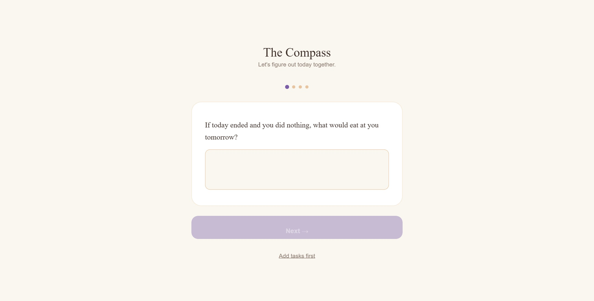
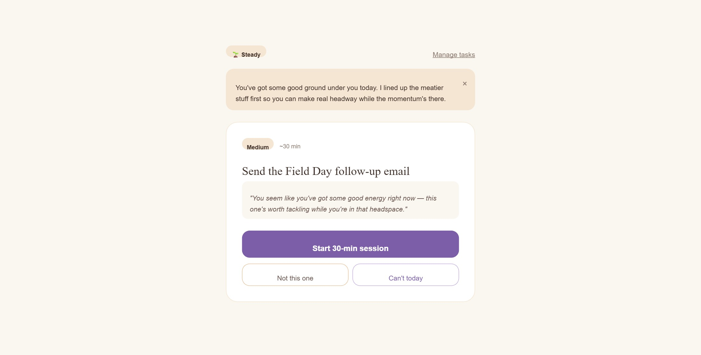

Trauma-Informed UX · ADHD-Aware · Solo Ship
A task prioritizer that reads your nervous system before it reads your to-do list.
Why most productivity tools fail before you've done anything
Most productivity tools share the same design assumption: you arrive regulated. Open the app, see the list, start working. That sequence treats attention and emotional state as fixed variables — something you bring to the task, not something the tool helps you navigate.
For people with ADHD and trauma histories, that assumption fails before the first screen loads. The list itself becomes the obstacle. Seeing everything you haven't done, all at once, triggers the exact nervous system response that makes starting impossible.
Design Decision 01
The Compass opens with four questions — rotating each session, conversational, never clinical — that read body state, social obligation, dread, and avoidance before a single task appears. The questions never ask "what are your tasks." That comes after.
This sequencing is intentional: knowing your regulation state changes which task surfaces first, not just what priority level it's been assigned. A person in a dissociated fog needs a different first task than someone who's sharp and caffeinated — even if their list is identical.

One of four rotating check-in questions. The four-dot progress indicator is the only structure — no numbers, no percentages.
Design Decision 02
After the check-in, you see one task card: the name, its energy weight, a time estimate, and the AI's reasoning for why this task is first given your current state. The reasoning is visible — not a black box.
A list is a to-do and a verdict on how behind you are at the same time. A single card with a reason is just a question. This comes directly from Cognitive Load Theory: reduce the decision surface, reduce the activation cost.
The regulation state label — 🌱 Steady, or fog, or buzzing — stays visible throughout. The AI calibrates its language to match: a "foggy" session gets gentler framing; a "sharp" session gets direct task sequencing.

The full task card view: regulation state, AI reasoning in italics, and three action options — start, swap, or defer without shame.
Design Decision 03
The task card offers three options: start the session, swap for a different task, or "Can't today." Choosing "Can't today" moves the task forward to tomorrow — no streak break, no guilt UI, no log of how many times you've deferred it.
The system treats it as information, not a deficit. The framing is: today was harder than the task. This is where trauma-informed design shows up most concretely — in what the app refuses to say.
Standard tool
"3 tasks overdue. You have 7 items remaining."
The Compass
"Can't today" moves it forward. No record kept. No streak broken.
Design principle
Shame mechanics don't motivate ADHD and trauma-affected users — they cause abandonment.
Iteration 1 established the structure. Iteration 2 earns it with data.